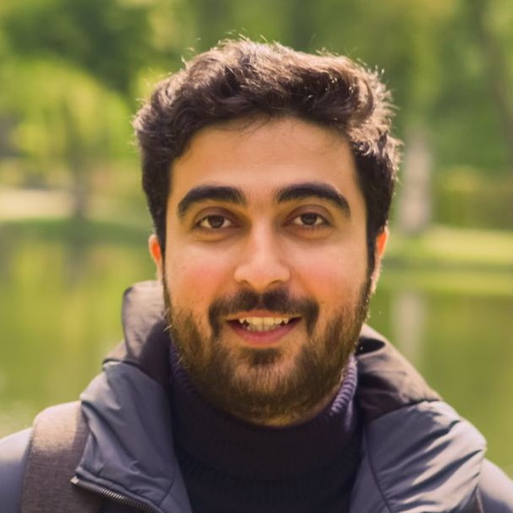

Mohammad Mahdi Derakhshani
Multimodal Generative Models | Large-Scale Pretraining
Welcome! I'm Mohammad, a researcher in multimodal generative models, working across the full stack from large-scale data curation to multi-node training.
Most recently, I was a Senior Member of Technical Staff at New Theory, working on pretraining geometry-conditioned models for a generalist robot. Before that, I was a postdoc at the University of Amsterdam's VIS Lab and a community researcher at Cohere Labs, where I co-led NeoBabel. I completed my Ph.D. at the VIS Lab in 2026 with Cees Snoek and Yuki Asano; my thesis is On Post-Training Artificial Intelligence Foundation Models.
Earlier, I interned at Microsoft Research (2023) on spatial composition in text-to-image diffusion models and at Samsung AI Center (2022) on Bayesian prompt learning. I did my master's at the University of Tehran on object detection and image compression.
Research Interests
- Generative models: diffusion and flow-matching transformers
- Pretraining and post-training: multimodal transformers, vision–language understanding
- Large-scale training: data curation, scaling laws, multi-node training (FSDP, DeepSpeed)
